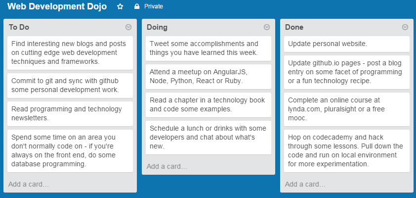
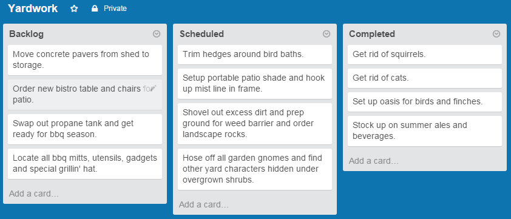
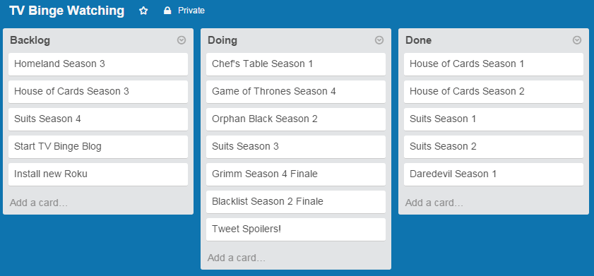

Check it out: Trello
Trello is an awesome tool for organizing just about anything! Honestly, I haven't moved past the creation of boards and cards, but that's the beauty of these tools - use what you need. And when you need to dig a little deeper, then the rest of the features are there waiting for you. You can share lists, pay a little or more for more features, or just sign up for a free account and start making lists of things to do!
It's a good idea to have a martial arts-style attitude towards programming, where you consistently train and teach yourself new things. Here's an example where there is a weekly or bi-weekly commitment to Googling new frameworks and APIs, finding cool new blogs and newsletters, doing some actual coding and then a little facebooking or tweeting.

Plan out some fun yard projects - and then just don't do them. Most of the fun is in the planning anyways. Seriously, just about any routine home repair or landscaping project is ideal for a trello board. Equally fun is knocking your way through the list and moving tasks to the right side of the board.

Trello can also be used for that all important list of binge-worthy tv shows. True, Netflix and Amazon Prime give you a queue feature, but it's more fun to see the whole list of shows in one place and count up all those hours you're about to waste.

Posted: May 13, 2015